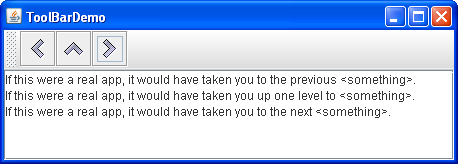
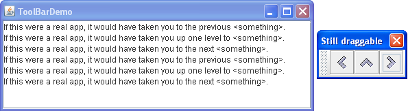

AJToolBaris a container that groups several components — usually buttons with icons — into a row or column. Often, tool bars provide easy access to functionality that is also in menus. How to Use Actions describes how to provide the same functionality in menu items and tool bar buttons.The following pictures show an application named ToolBarDemo that contains a tool bar above a text area. You can run ToolBarDemo (it requires release 6) using JavaTM Web Start. Or to compile and run it yourself, consult the example index.
 By default, the user can drag the tool bar to a different edge of its container or out into a window of its own. The next figure shows how the application looks after the user has dragged the tool bar to the right edge of its container.
[PENDING: This figure will be updated.] For the drag-out behavior to work correctly, the tool bar must be in a container that uses
BorderLayout. The component that the tool bar affects is generally in the center of the container. The tool bar must be the only other component in the container, and it must not be in the center.The next figure shows how the application looks after the user has dragged the tool bar outside its window.
 [PENDING: This figure will be updated.]The following code creates the tool bar and adds it to a container. You can find the entire program in
ToolBarDemo.java.The code positions the tool bar above the scroll pane by placing both components in a panel controlled by a border layout, with the tool bar in thepublic class ToolBarDemo extends JPanel implements ActionListener { ... public ToolBarDemo() { super(new BorderLayout()); ... JToolBar toolBar = new JToolBar("Still draggable"); addButtons(toolBar); ... setPreferredSize(new Dimension(450, 130)); add(toolBar, BorderLayout.PAGE_START); add(scrollPane, BorderLayout.CENTER); } ... }PAGE_STARTposition and the scroll pane in theCENTERposition. Because the scroll pane is in the center and no other components except the tool bar are in the container, the tool bar is automatically draggable to other edges of the container. The tool bar can also be dragged out into its own window, in which case the window has the title "Still draggable", as specified with theJToolBarconstructor.
Note: The tool bar's window is aJDialog. This demo usesJDialog.setDefaultLookAndFeelDecorated(true)to make the window's decorations be painted by the look and feel, which by default is the Java look and feel. Unfortunately, bug # 4820659 prevents the user from using the mouse to close dialogs decorated by the Java look and feel. You might consider not using dialog decorations from the Java look and feel until the fix for this bug is released.Another bug to keep an eye on is # 4793741, which proposes that the tool bar's window get the defaultLookAndFeelDecorated setting from
JFrame.

Creating Tool Bar Buttons
The buttons in the tool bar are ordinaryJButtons that use images from the Java look and feel Graphics Repository. We encourage you to consider using images from the repository if your tool bar uses the Java look and feel.Each image in the repository comes in 16x16 and 24x24 versions, provided in a file named
jlfgr-1_0.jar. You can download this JAR file from the Java look and feel Graphics Repository page. That page shows all the images and has links to pages that describe each image, including its intended use and location within the JAR file.Here is the code that creates the buttons and adds them to the tool bar.
The first call toprotected void addButtons(JToolBar toolBar) { JButton button = null; //first button button = makeNavigationButton("Back24", PREVIOUS, "Back to previous something-or-other", "Previous"); toolBar.add(button); //second button button = makeNavigationButton("Up24", UP, "Up to something-or-other", "Up"); toolBar.add(button); ...//similar code for creating and adding the third button... } protected JButton makeNavigationButton(String imageName, String actionCommand, String toolTipText, String altText) { //Look for the image. String imgLocation = "toolbarButtonGraphics/navigation/" + imageName + ".gif"; URL imageURL = ToolBarDemo.class.getResource(imgLocation); //Create and initialize the button. JButton button = new JButton(); button.setActionCommand(actionCommand); button.setToolTipText(toolTipText); button.addActionListener(this); if (imageURL != null) { //image found button.setIcon(new ImageIcon(imageURL, altText)); } else { //no image found button.setText(altText); System.err.println("Resource not found: " + imgLocation); } return button; }makeNavigationButtoncreates the image for the first button, using the 24x24 "Back" navigation image in the graphics repository. We found the image by looking at the Java look and feel Graphics Repository page, which shows the navigation images (among others) and has a link to the navigation graphics page. That page describes the navigation images and informs us that the 24x24 Back image is located attoolbarButtonGraphics/navigation/Back24.gif. ThemakeNavigationButtonmethod gets the image from the repository's JAR file (assuming the JAR file is in the example's code base) using thegetResourcemethod.Besides finding the image for the button, the
makeNavigationButtonmethod also creates the button, sets the strings for its action command and tool tip text, and adds the action listener for the button. If the image is missing, the method prints an error message and puts text on the button, so that the button is still usable.
Note: If any buttons in your tool bar duplicate functionality of other components, such as menu items, you should probably create and add the tool bar buttons as described in How to Use Actions.
Customizing Tool Bars
By adding a few lines of code to the preceding example, we can demonstrate some more tool bar features:
Here is a picture of the new UI. You can run ToolBarDemo2 (it requires release 6) using Java Web Start. Or to compile and run it yourself, consult the example index. You can find the code in
- Using
setFloatable(false)to make a tool bar immovable.- Using
setRollover(true)to make the edges of the tool bar's buttons invisible except for the button (if any) that the mouse pointer is over.- Adding a separator to a tool bar.
- Adding a non-button component to a tool bar.
ToolBarDemo2.java.[PENDING: This figure will be updated. The cursor should be over the fourth button, showing that the button under the cursor has an outline.] Because the tool bar can no longer be dragged, it no longer has bumps at its left edge. Here's the code that turns off dragging:
toolBar.setFloatable(false);The tool bar is in rollover mode, so only the button under the cursor has a border. Here's the code that sets rollover mode:
toolBar.setRollover(true);Another visible difference is that the tool bar contains two new components, which are preceded by a blank space — a separator. Here is the code that adds the separator:
Here is the code that adds the new components:toolBar.addSeparator();You can easily make the components in a tool bar be aligned along their tops or bottoms, instead of centered, by invoking the//fourth button button = new JButton("Another button"); ... toolBar.add(button); //fifth component is NOT a button! JTextField textField = new JTextField("A text field"); ... toolBar.add(textField);setAlignmentYmethod. For example, to align the tops of all the components in a tool bar, invokesetAlignmentY(TOP_ALIGNMENT)on each component. Similarly, you can use thesetAlignmentXmethod to specify the alignment of components when the tool bar is vertical. This flexibility of layout is possible because tool bars useBoxLayoutto position their components. For more information, see How to Use BoxLayout.

The Tool Bar API
The following table lists the commonly usedJToolBarconstructors and methods. Other methods you might call are listed in the API tables in The JComponent Class.
Method or Constructor Purpose JToolBar()
JToolBar(int)
JToolBar(String)
JToolBar(String, int)Create a tool bar. The optional int parameter lets you specify the orientation; the default is HORIZONTAL. The optionalStringparameter, allows you to specify the title displayed for the undocked tool bar's window.Component add(Component) Add a component to the tool bar. Version note: Before 1.3, the only way to associate an
Actionwith a tool bar button was to useJToolBar'sadd(Action)method to create the button and add it to the tool bar. As of 1.3, that method is no longer recommended. You can instead associate a button with anActionusing thesetAction(Action)method defined byAbstractButton.void addSeparator() Add a separator to the end of the tool bar. void setFloatable(boolean)
boolean isFloatable()The floatable property is true by default, to indicate that the user can drag the tool bar out into a separate window. To turn off tool bar dragging, use toolBar.setFloatable(false). Some look and feels might ignore this property.void setRollover(boolean)
boolean isRollover()The rollover property is false by default. Set it to true to request that every button in the tool bar have no borders until the user passes the cursor over the button. Some look and feels might ignore this property.
Examples that Use Tool Bars
This table lists examples that useJToolBarand where those examples are described.
Example Where Described Notes ToolBarDemoThis page A basic tool bar with icon-only buttons. ToolBarDemo2This page Demonstrates a non-floatable tool bar in rollover mode that contains a separator and a non-button component. ActionDemoHow to Use Actions Implements a tool bar using Actionobjects.